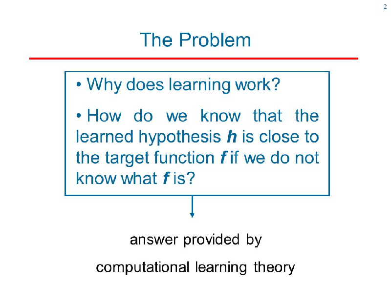

Computational learning is a sub field of artifical intellignece more then it is a machine learning focus. These days though, most data sciences
go hand in hand with one another! This field focuses on how learning occurs and how to apply that to non-human learning tools.
Breaking down the epistomological process down into a program has some cross over to both machine learning and life! The more we learn about
teaching machines, the more we can learn about teaching other people too!